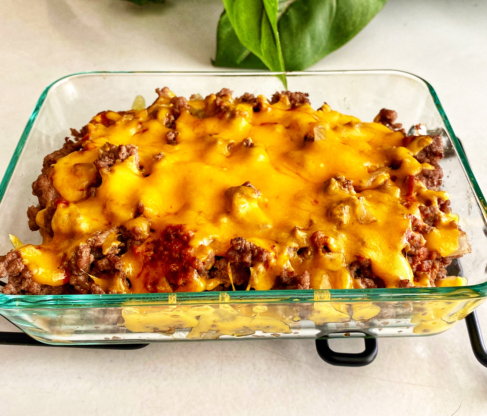

Description
Reminiscent of a cheeseburger without the bun. Fits perfectly into the keto diet. Made with ingredients you mostly likely have.
Ingredients
- 1 teaspoon butter, or as needed
- 1 pound ground beef
- ½ cup diced onion
- 2 cloves garlic cloves, pressed
- salt and freshly ground black pepper to taste
- 1 cup shredded sharp Cheddar cheese, divided
- 2 tablespoons ketchup
- 2 tablespoons mayonnaise
- 2 tablespoons diced dill pickles
- ½ tablespoon mustard
Directions
- Preheat the oven to 400 degrees F (200 degrees C). Grease a baking dish with butter.
- Cook ground beef and onion in a large, nonstick skillet over medium heat until beef is browned and onions are soft and translucent, 5 to 10 minutes. Add garlic and cook until fragrant, about 1 minute. Season with salt and pepper. Stir in 1/2 cup Cheddar cheese until well combined.
- Remove from heat. Add ketchup, mayonnaise, pickles, and mustard. Transfer mixture to buttered baking dish and top with remaining 1/2 cup Cheddar cheese.
- Bake in the preheated oven until cheese is melted, 7 to 10 minutes.
Return to top
Return to home page